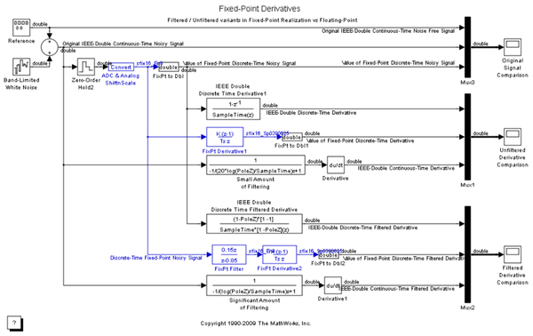
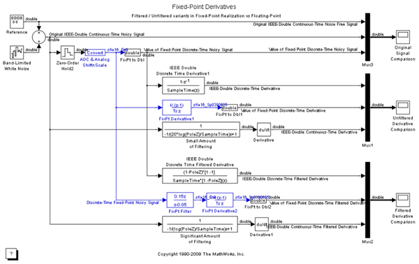

Fixed-Point Derivatives
Sample implementations of filtered and unfiltered fixed-point derivative algorithms are presented for comparison with floating point implementations.
Sample implementations of filtered and unfiltered fixed-point derivative algorithms are presented for comparison with floating point implementations.
